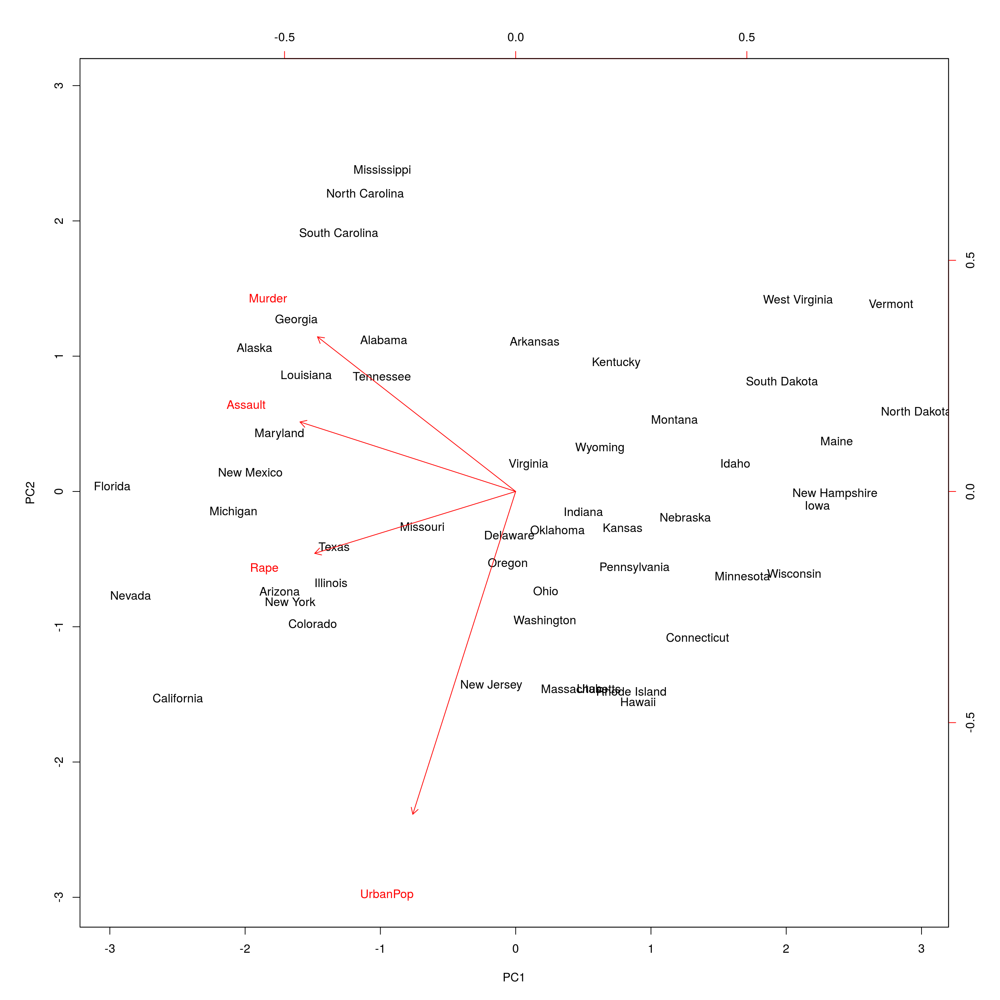
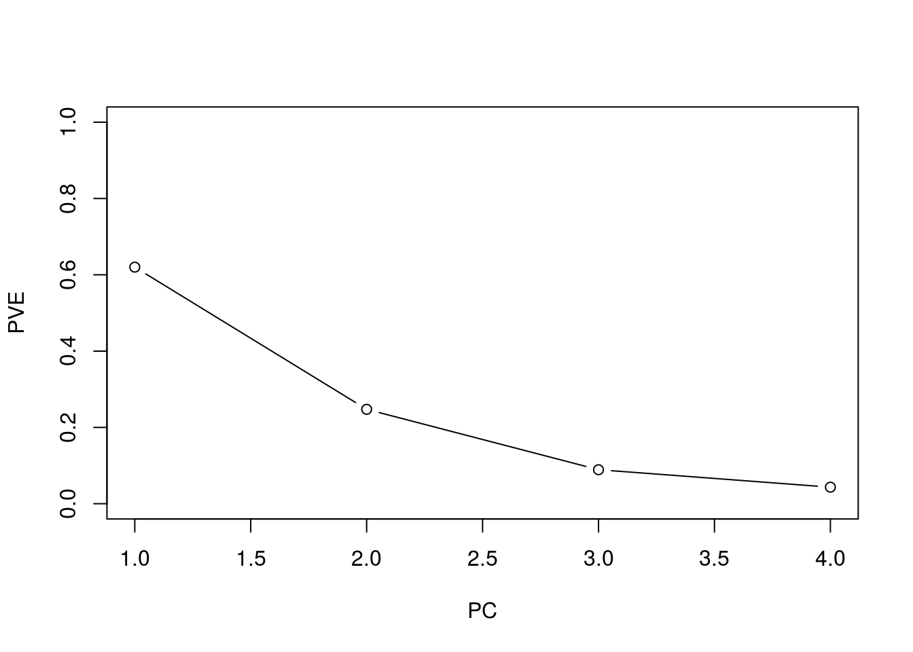
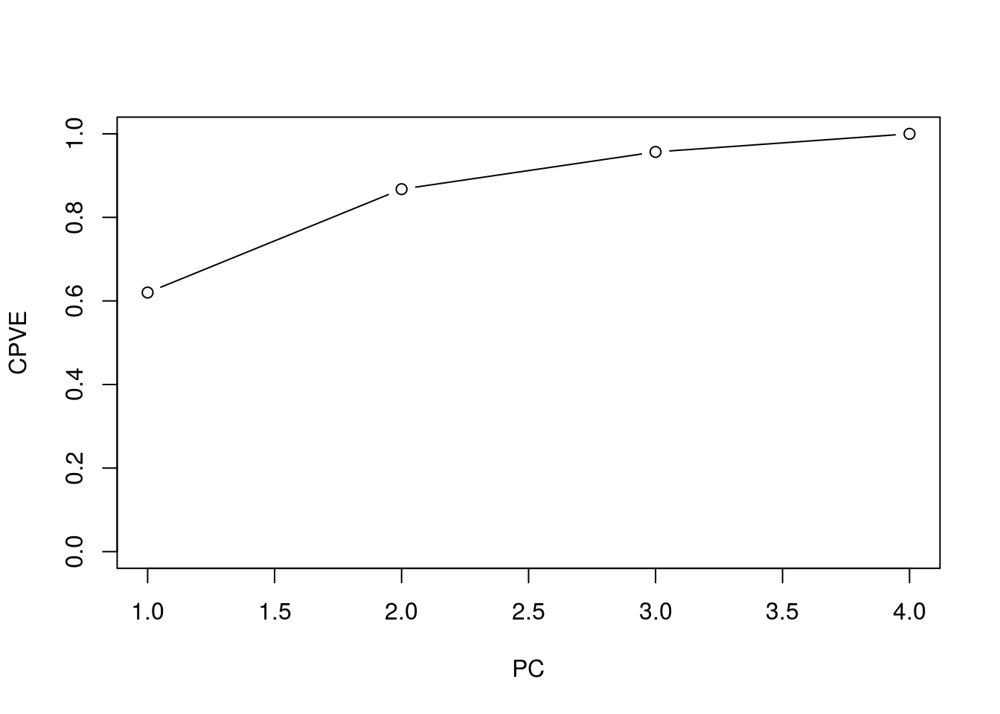

对 R 内置的数据集 USArrests 演示主成分的使用方法。
数据包含 50 个州，
states = row.names(USArrests)
states## [1] "Alabama" "Alaska" "Arizona" "Arkansas"
## [5] "California" "Colorado" "Connecticut" "Delaware"
## [9] "Florida" "Georgia" "Hawaii" "Idaho"
## [13] "Illinois" "Indiana" "Iowa" "Kansas"
## [17] "Kentucky" "Louisiana" "Maine" "Maryland"
## [21] "Massachusetts" "Michigan" "Minnesota" "Mississippi"
## [25] "Missouri" "Montana" "Nebraska" "Nevada"
## [29] "New Hampshire" "New Jersey" "New Mexico" "New York"
## [33] "North Carolina" "North Dakota" "Ohio" "Oklahoma"
## [37] "Oregon" "Pennsylvania" "Rhode Island" "South Carolina"
## [41] "South Dakota" "Tennessee" "Texas" "Utah"
## [45] "Vermont" "Virginia" "Washington" "West Virginia"
## [49] "Wisconsin" "Wyoming"有四个特征
names(USArrests)## [1] "Murder" "Assault" "UrbanPop" "Rape"先计算下这四个变量的均值和方差，可以发现差异很大
apply(USArrests, 2, mean)## Murder Assault UrbanPop Rape
## 7.788 170.760 65.540 21.232apply(USArrests, 2, var)## Murder Assault UrbanPop Rape
## 18.97047 6945.16571 209.51878 87.72916所以对数据进行 scale 是很必要的，不然大部分主成分都会被 Assault 主导。采用下面命令进行主成分，
pr.out = prcomp(USArrests, scale = TRUE)prcomp() 默认会对数据中心化，但只有指定 scale=TRUE 才能对数据方差进行标准化（标准差为 1）。返回结果中包含以下变量
names(pr.out)## [1] "sdev" "rotation" "center" "scale" "x"其中 center 和 scale 对应进行中心化和标准化时变量的均值和标准差。rotation 返回主成分载荷。注意到一般会有 \(\min(n-1,p)\) 个主成分。
我们不需要另外计算 scores，因为 pr.out$x 就是 scores。
利用下面命令可以画出前两个主成分图象，
biplot(pr.out, scale = 0)
下面计算每个主成分解释的方差比例
pr.var = pr.out$sdev^2
pve = pr.var / sum(pr.var)然后绘制 方差解释比例 (PVE) 及 累计方差解释比例 (cumulative PVE)，
plot(pve, xlab = "PC", ylab = "PVE", ylim = c(0, 1), type = 'b')
plot(cumsum(pve), xlab = "PC", ylab = "CPVE", ylim = c(0,1), type = 'b')
Copyright © 2016-2019 weiya